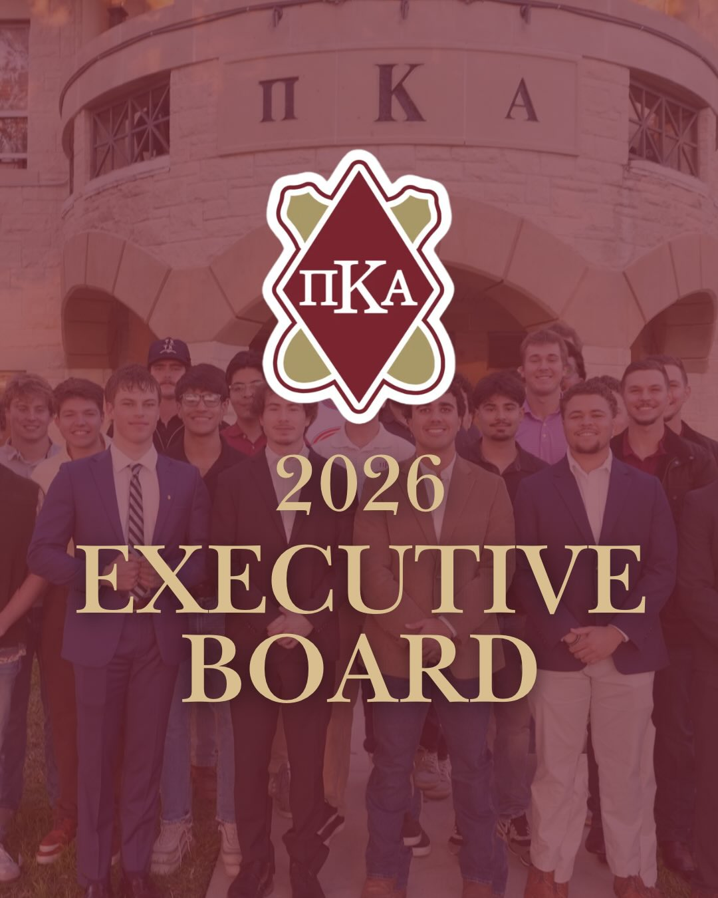

Campus Life · 58 Members
Incoming Chapter Leadership
The newly elected officers take office on November 30, 2026. Until then, the current officers continue serving while the incoming officers prepare for the transition.

Earlier 2026 Executive BoardBefore the November elections · View on Instagram